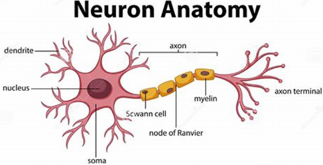

v.
Overview
- Describe genetic programming and its applications
- Explain the steps involved in genetic algorithm
Learning from Nature
Learning from Nature

Why do we want to learn from nature?
Learning from Nature (2)
Biology/nature is a good metaphor:
- Results of 3.8 billion years of best-to-fit natural selection
- Biological organisms resolved many of nature's challenges
leading to lasting solutions with maximal performance - Very economic, using minimal resources
- Highly adaptive to different environments, including even some extreme conditions
Real World
$\qquad\qquad$- Genotype: DNA
- Phenotype: Organism
- one-way - changes to the phenotype do not
change the genotype (simplification) - Genotype is information
- Phenotype is physical organism
Fitness
- In Biology: how likely the object is to survive to
reproduce - Fitness is not a measure of 'goodness', but adaption $\qquad\qquad\qquad\qquad$
to an environment - A product of the environment (endogenous)
Genetic Algorithm
Genetic Algorithm
- A type of evolutionary algorithms that are inspired by natural selection
- Population-based search algorithm
- Hav a population of individuals that are represented by genotypes
- Converted to Phenotype for evaluation
- Based on Charles Darwin's theory of evolution
- Evolutionary computing evolved in the 1962's
- GA were proposed by John Hollan in the middle of 1970's
Theory of Evolution
- An offspring has many of the characteristics of its parents, which implies that the population is stable
- There are variations in characteristics between individuals that can be passed from one generation to the next
- Biological populations survive by reproduction
- Only a small percentage of the offspring produced survive to adulthood
- Which of the offspring survive depends on their inherited characteristics
- Survival of the fittest - traits which are valuable for survival tend to propagate
Advantages
- Optimise with continuous or discrete variables
- Derivative information is not required
- Able to deal with a large number of decision variables
- Optimise decision variables with extremely complex cost function
- Is less likely trapped in local optimum
- Tends to search for global optimum
Basic Idea
- Initialise the population
- Evaluation: if good enough, stop; otherwise ...
- Select individuals for reproduction
- Crossover for recombination
- Mutation to introduce variations
- Evaluate the new generation
GA - Pseudocode
(1) Randomly initialise populations p
(2) Determine fitness of population
(3) Until convergence repeat:
(a) Select parents from population
(b) Crossover and generate new population
(c) Perform mutation on new population
(d) Calculate fitness for new populationIndividuals
- Each individual is one solution for the given problem
- Sometimes called chromosomes
- An individual contains or is characterised by a set of parameters called Genes
Population
- Population is a set of individuals - population size is fixed
- Population collects a group of potential solutions, which will be evolved to improve their quality in each generation
- How do we create the initial population?
- Completely random
- Bias random
- Bias towards known good individuals (bootstrapping)
Termination
- When to stop?
- Run out of time
- Number of generations
- Real time 'wall time'
- CPU time
- Solution is good enough
- Stagnation (no progress being made) - converged
Selection
- How do we select individuals?
- Top $n$ individuals
- Tournament - select $n$ individuals and evaluate their fitness
- Fitness proportional selection - give each individual a chance based on their fitness
Fitness Function
- The ability of an individual to compete with other individuals
- Fitness score determines the probability of being selected for reproduction
- Thus, each new generations have better “partial solutions” than previous generations
- How do we decide who is a good member?
- Domain specific - you make the choice
Reproduction
- There are 2/3 main ways of generating the offspring:
- Crossover: pick two individuals and combine them into a new individual
- Mutation: randomly alter an individual
- Elitism: copy an individual directly into the new generation
Binary Genetic Algorithm
Binary Encoding and Decoding
Chromosomes (individuals) are represented by binary string
Decimal to binary: convert $25.3125$ to binary
The integer part: $25$
$\begin{array}{rrr} 25 / 2 & = & 12 & \to \boxed{1} \\ 12 / 2 & = & 6 & \to \boxed{0} \\ 6 / 2 & = & 3 & \to \boxed{0} \\ 3 / 2 & = & 1 & \to \boxed{1} \\ 1 /2 & = & 0 & \to \boxed{1} \end{array}$
$\begin{array}{rrr} 25 / 2 & = & 12 & \to \boxed{1} \\ 12 / 2 & = & 6 & \to \boxed{0} \\ 6 / 2 & = & 3 & \to \boxed{0} \\ 3 / 2 & = & 1 & \to \boxed{1} \\ 1 /2 & = & 0 & \to \boxed{1} \end{array}$
The fractional part: $0.3125$
$\begin{array}{rll} 0.3125 \times 2 & = & 0.625 & \to \boxed{0} \\ 0.625 \times 2 & = & 1.25 & \to \boxed{1} \\ 0.25 \times 2 & = & 0.5 & \to \boxed{0} \\ 0.5 \times 2 & = & 1 & \to \boxed{1} \end{array}$
$25.3125_{10} = 11001.0101_2$
Binary to decimal: $(1\times 2^4+1\times 2^3+0\times 2^2+0\times 2^1+1\times 2^0).(0\times 2^{-1}+1\times 2^{-2}+0\times 2^{-3}+1\times 2^{-4})$
$\begin{array}{rll} 0.3125 \times 2 & = & 0.625 & \to \boxed{0} \\ 0.625 \times 2 & = & 1.25 & \to \boxed{1} \\ 0.25 \times 2 & = & 0.5 & \to \boxed{0} \\ 0.5 \times 2 & = & 1 & \to \boxed{1} \end{array}$
$25.3125_{10} = 11001.0101_2$
Binary Bit Length
- Given a number $x \in [x_{low},x_{high}]$, how many bits ($m$) are required to achieve precision of $d$ decimal places? $$ \frac{x_{high}-x_{low}}{10^{-d}} \le 2^m -1$$
- Example: $x \in [25,100]$, precision 2 decimal places $$ \frac{100-25}{10^{-2}} \le 2^m-1 \implies 7501 \le 2^m \implies m = 12.8729 \approx 13\> bits $$
Binary Bit Length (2)
- Example: $x \in [25,100]$, precision 2 decimal places $$ \frac{100-25}{10^{-2}} \le 2^m-1 \implies 7501 \le 2^m \implies m = 12.8729 \approx 13\> bits $$
- $\begin{array}{lll} 0000000000000 \to 25 + 0 \times \frac{100-25}{2^{13}-1} = 25 \\ 0000000000001 \to 25 + 1 \times \frac{100-25}{2^{13}-1} = 25.0092 \\ 0000000000010 \to 25 + 2 \times \frac{100-25}{2^{13}-1} = 25.0183 \end{array}$
- Decoding: $x=x_{low}+decimal(1001 \cdots 001_2)\times \frac{x_{high}-x_{low}}{2^m-1}$
Crossover

- Three approaches:
- Single-point crossover
- Double-point crossover
- Uniform crossover
- Purpose: create offspring from the
parents selected in the selection $\qquad\qquad\qquad\qquad\qquad\qquad\qquad\qquad$
process by exchanging information
Single-Point Crossover
Select a random point in the genome, swap the right (or left) sections of parents $p_1$ and $p_2$
$\begin{array}{c|c|c} p_1 & \color{red} 1 \quad 0 \quad 0 & \color{red} 0 \quad 0 \quad 0 \quad 0 \quad 1 \\ p_2 & \color{lime} 1 \quad 1 \quad 1& \color{lime} 1 \quad 0 \quad 1 \quad 1 \quad 0 \\ \hline offspring_1 & \color{red} 1 \quad 0 \quad 0 &\color{lime} 1 \quad 0 \quad 1 \quad 1 \quad 0 \\ offspring_2 & \color{lime} 1 \quad 1 \quad 1 & \color{red} 0 \quad 0 \quad 0 \quad 0 \quad 1 \end {array}$Double-Point Crossover
Select 2 random points in the chromosomes, swap the sections between the 2 points of $p_1$ and $p_2$
$\begin{array}{c|c|c|c} p_1 & \color{red} 1 \quad 0 \quad 0 & \color{red} 0 \quad 0 \quad 0 \quad 0 & \color{red} 0 \\ p_2 & \color{lime} 1 \quad 1 \quad 1& \color{lime} 1 \quad 0 \quad 1 \quad 1 & \color{lime} 1 \\ \hline offspring_1 & \color{red} 1 \quad 0 \quad 0 & \color{lime} 1 \quad 0 \quad 1 \quad 1 & \color{red} 0 \\ offspring_2 & \color{lime} 1 \quad 1 \quad 1 & \color{red} 0 \quad 0 \quad 0 \quad 0 & \color{lime}1 \end {array}$Uniform Crossover
- Don't split chromosomes, treat bit separately
- Each gene of the offspring is chosen from either parent with a probability
- Can use different probability if prefer one over the other
- Can produce more than 2 offspring
Mutation
$\begin{array}{r|c} p & \color{lime} 1 \quad 1 \quad 0 \quad 1 \quad \color{red} 0 \color{lime} \quad 0 \quad 1 \quad 0 \\ \hline offspring & \color{lime} 1 \quad 1 \quad 0 \quad 1 \quad \color{red} 1 \color{lime} \quad 0 \quad 1 \quad 0 \end{array}$- Purpose: random mutations alter a certain percentage of the bits of the chromosome
- Allows the GA to explore unknown regions by introducing new information
- Can either mutate only one random bit, or
- Mutate several bits at the same time by a mutation probability $\mu \in [0,1]$
- Elitism: copy the best individual to the next generation directly
- Preserve the good sample!
Mutation vs Crossover
- Mutation helps to avoid the algorithm getting 'stuck' in local minima
- Crossover works to recombine 'useful' parts of the genotype
- The crossover and mutation rates balance exploration and exploitation
Summary
- History of evolutionary algorithms
- Genetic algorithm
Questions?